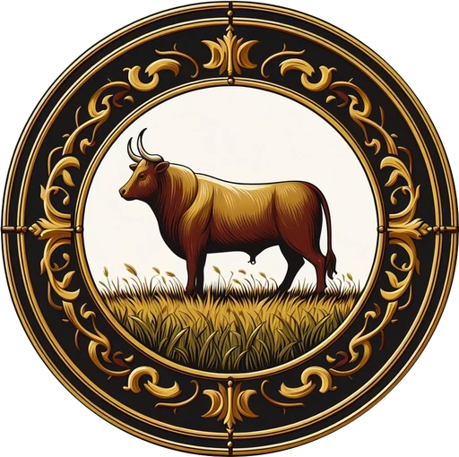
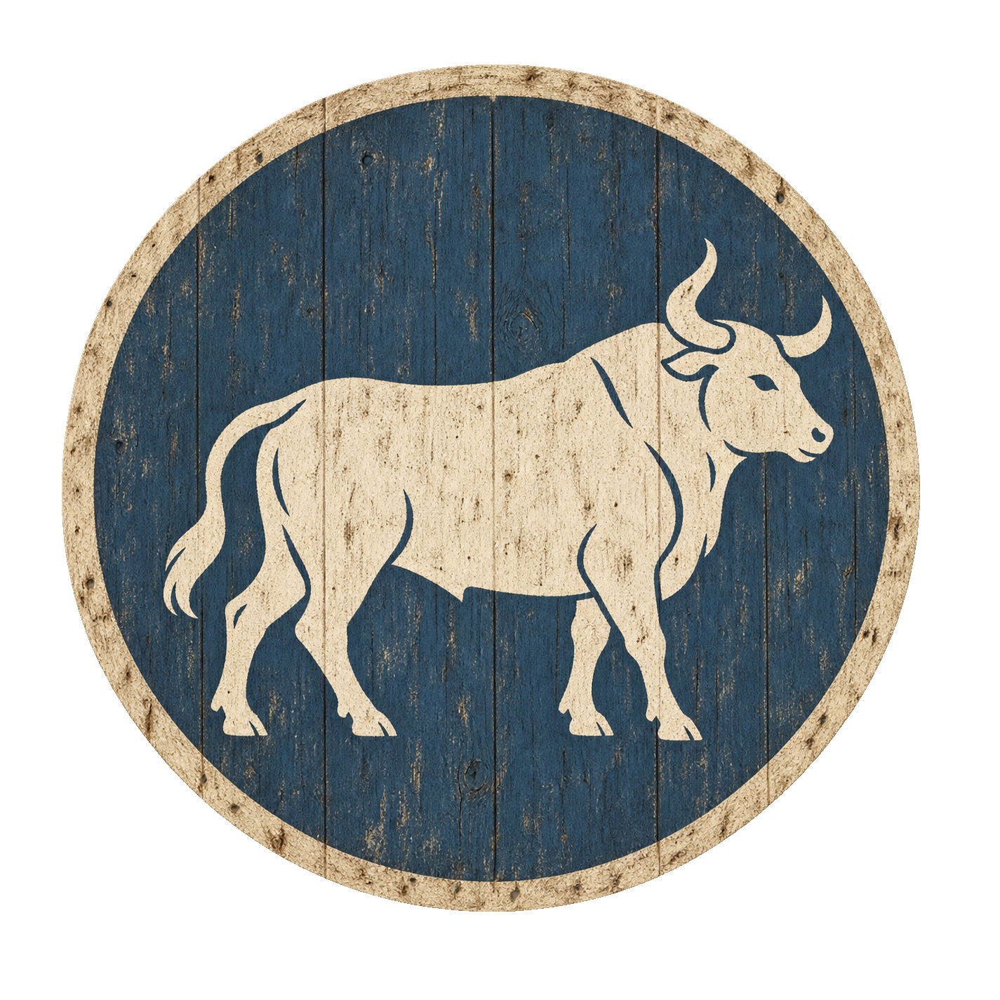

Das Erlenkönigreich · Ein Land im Wandel
Weisenfluh
Ein helles Land.
Eine alte Herkunft.
Einst das albische Fürstentum Bànneach. Heute ein Königreich, dessen Sprache, höfische Kultur und führende Aristokratie ihren eigenen Weg gegangen sind.
- Krone
- Erlenkönig
- Provinzen
- 5
- Alte Clans
- 7 im Entwurf


Antiker Wappenentwurf
01 · Die Wurzeln
Aus Bànneach wurde Weisenfluh.
Bànneach bedeutet sinngemäß das weiße Land oder das helle Land. Über Jahrhunderte wirkten die Kaiserstadt, die heutige Blutstadt, sowie die umliegenden Fürstentümer, Aldingen und Goldmund auf das Land ein. Besonders die Eliten öffneten sich ihrem Einfluss.
Die albischen Wurzeln wurden allmählich eingetauscht: Die Sprache veränderte sich, und mit ihr wandelten sich Sitten, höfisches Selbstverständnis und Kultur. Die führende Aristokratie versteht sich heute als weisenfluhisch.
Alte albische Clans bestehen weiterhin. Manche passten sich an und nahmen neue Namen an. Andere hielten an ihrer Herkunft fest und verloren in den langen Konflikten zunehmend Besitz und Bedeutung. Ihre noch offenen Sitze können wir in dieser Vorschau gemeinsam ausprobieren.
02 · Die politische Ordnung
Eine Krone, fünf Provinzen.
Der Erlenkönig ist seiner tatsächlichen Stellung nach eher ein Fürst. Die Freiherren entsprechen Baronen; die Landmänner stehen auf der Ebene der Ritterfürsten.
03 · Wappen & Orte
Wer könnte wo seinen Sitz haben?
Ein Wappen wählen und einen Ort auf der Karte anklicken – oder Wappen direkt auf einen Ort ziehen.
Noch ohne Sitz
Häuser & albische Clans
Die sieben albischen Clans beginnen hier ohne Zuordnung. Diese Wappen können zu jedem Ort wandern. Ziehe ein bereits platziertes Wappen hierher zurück, um seinen Sitz wieder offenzulassen.
04 · Das Hausregister des Entwurfs
Die Häuser an ihren gewählten Sitzen.
Weisenfluh ist für höfische Pracht bekannter als für sein Kriegertum. Seine Ritter tragen feine Stoffe, elegante Harnische und individuelle Helme. Die Sitzanordnung folgt deinem aktuellen Entwurf. Rang und ursprüngliche Provinzzugehörigkeit bleiben bei jedem Haus sichtbar. Über „Haus & Krieger“ öffnest du Wappen und vollständigen Kriegerentwurf mit Klassenvorschlag.
Deinen Vorschlag mitnehmen.
Zurücksetzen stellt die gelieferten Zuordnungen wieder her und lässt die sieben albischen Clans erneut offen.